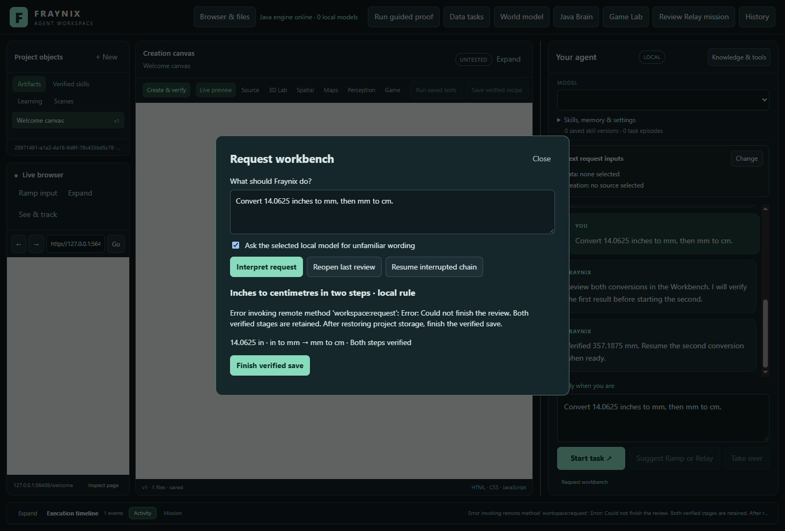
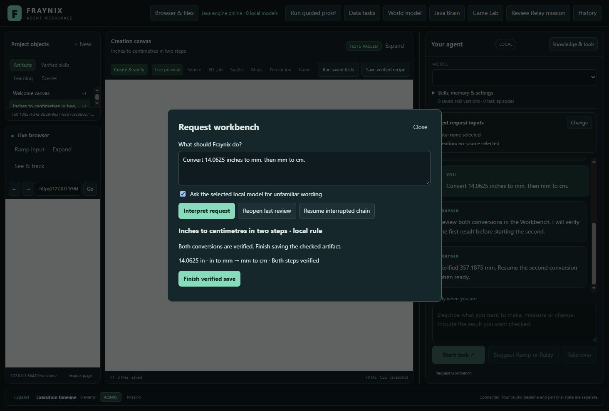
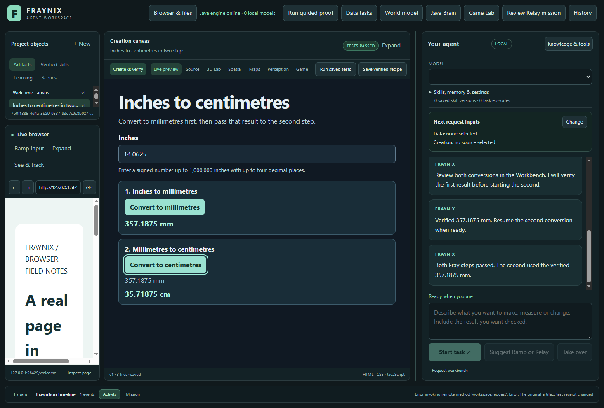

Recover the final review write and recheck its stored receipt
Fraynix can finish a Fray review after storage rejects the final write, even when the artifact and its browser receipt were already saved. Completed chain verification checks the current receipt on disk.

Windows rejected the final review write

The same verified review is ready to finish after restart

The recovered artifact opens with its browser checks passed
System files
Open source